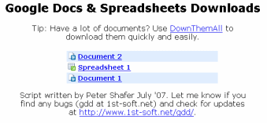

Users of the Google Docs web service can easily access and manage their documents in one location online. However, they still would like to be able to back up and archive their files on their own systems. Unfortunately that isn't so easy and requires you to download backups of each document individually. The Google Download Script was written to help streamline this process.
Firefox Greasemonkey Script
Note: Google has now built bulk document exporting into the GDocs interface. Read more about it at Google OS. The GDD greasemonkey script will still be available for those who prefer to download uncompressed documents. But if you just want to download archive copies then google's solution requires less effort on your part.
Google Docs: Download is installed as a Grease Monkey script. Once installed here is what you see on your google documents control panel.

Just navigate to the document list that you wish to download and select the documents you want to download by clicking their checkboxes or click the select: all link at the bottom of the page. Click the drop down menu on the right side of the page that reads "Download Your Documents" and select a format. A new window will open and you now have a list of links to download all of the documents that you selected.

Now use DownThemAll to mass download your documents! You have now backed up your documents from google docs. You can archive them to the medium of your choosing and then place it under your mattress so you can sleep at night knowing that if google exploded that night you would still have your files.
1. Download Firefox | |
2. Install DownThemAll | |
 |
3. Install Greasemonkey |
4. Install Google Docs: Download |
and you're ready to go!
GDD is also compatible with other browsers that support user scripts.
|
|

Updates 
Bugs & Contact
If the document list is opened in thumbnail view, you must switch back to list view before attempting to download documents. The script will otherwise not detect your download selection.
If you find a blue bar at the bottom of any of your documents use the "Edit" -> "Edit HTML" to find and delete the following line of html:
<div style="padding: 7px; font-family: verdana; width: 200px; background-color: rgb(103, 167, 227); color: white;" id="GDDError"></div>


Google Docs: Download was written by Peter Shafer, student developer, originally in April 2007.
Contact: peter at 1st-soft.net
Thanks to F.D. Cleary for helping me debug the script.
Python Script BETA
Disclaimer: Use this script if you are comfortable with command-line programs. I can't support your operating system or python installation, only questions directly regarding the script.
The GDD python script runs from the command line of your operating system of choice (no browser required.)
It requires that you install python then download and unpack the python script. Then, from the command line
navigate to the script's folder and run the command python gdd.py (Note: In some cases you may be
able to run the script by double clicking it from your file explorer.)
After providing your email address and password the script will begin downloading your documents. You files are downloaded
to a subdirectory of the script's directory named with the email address you provided.
If you are using Google Docs to store arbitrary file types (photos, mp3s, etc) then consider downloading gdd3.py. This version of the script is based on version 3 of Google's Document List API protocol. The new API is currently classified as a Google Labs project, so gdd3.py's behavior could possibly be less consistent. It can be used alongside gdd.py and your existing configuration file.
|
|
Tips
By default your files are downloaded in microsoft office formats. This can be changed by adding flags to the command line though.
python gdd.py --format=format_key
Format key can be any of the following:
- mso: Microsoft Office
- oo: Open Office
- csv: Text or Comma-Separated Values
- pdf: Portable Document Format
- txt: RTF or text
Alternatively you can specify a format for each type of document with the --document_format=format_key
--spreadsheet_format=format_key --presenation_format=format_key and --drawing_format=format_key flags followed by one of the format keys.
A full listing of file formats can be found in google's docfeed documentation.
Any of the format codes listed there can be specified in place of a format key.
If you have a lot of documents and only want to download those that you have modified since your last download you can use the --modified-only flag.
If the --feed=url tag is used then only documents that are associated with that feed will be downloaded. This is a good way to only download
starred documents or documents in a specific folder. Use the doclist feed documentation
to create the feed url you desire. The default is https://docs.google.com/feeds/documents/private/full
Please see the ReadMe.txt file for more information regarding script configuration options.
Updates
Bugs & Contact
Google Docs: Download for python was written by Peter Shafer, originally in June 2009.
Contact: peter at 1st-soft.net
Thanks to F.D. Cleary for helping me debug the script.
Do you need to backup your google notebooks? Check out Google Notebook: Download